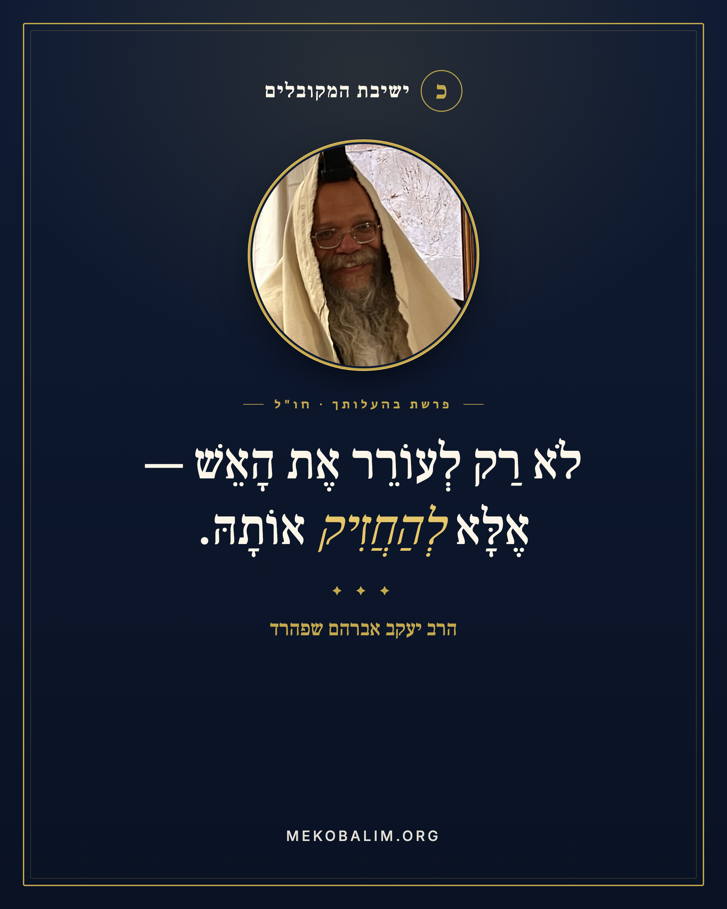
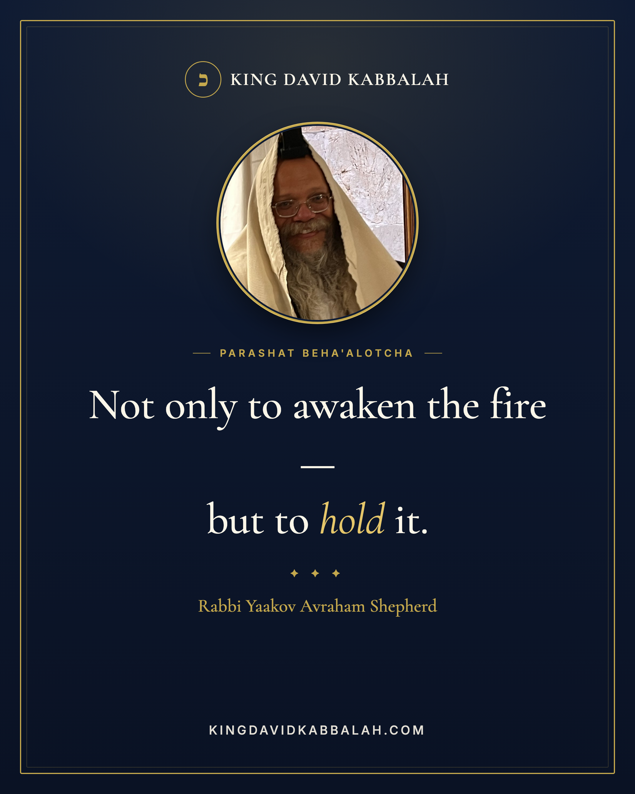
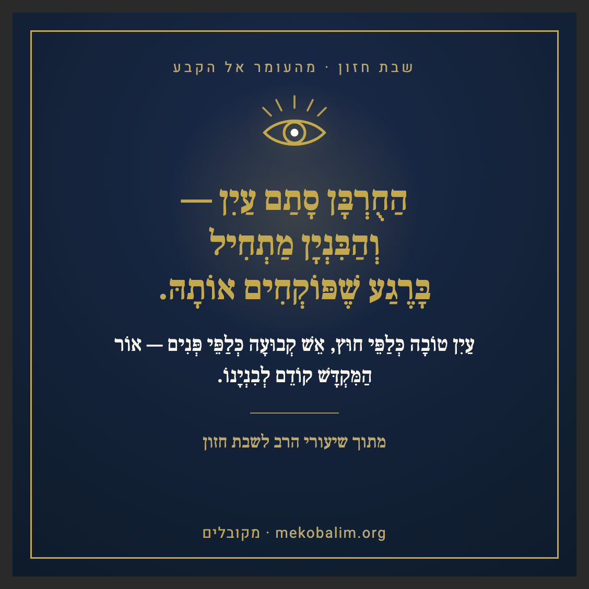
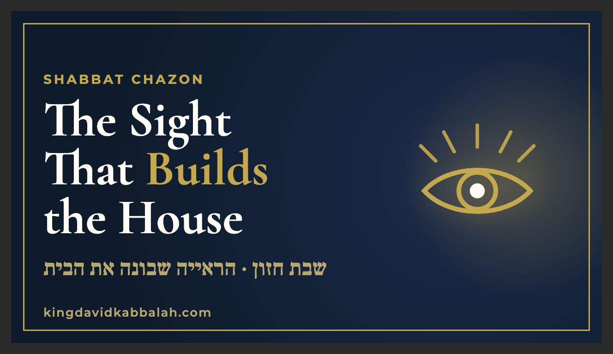
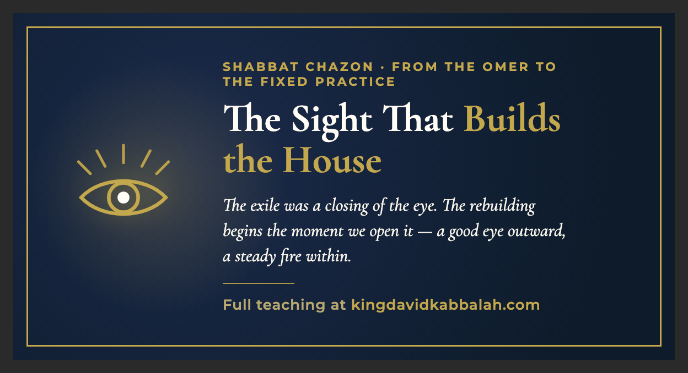
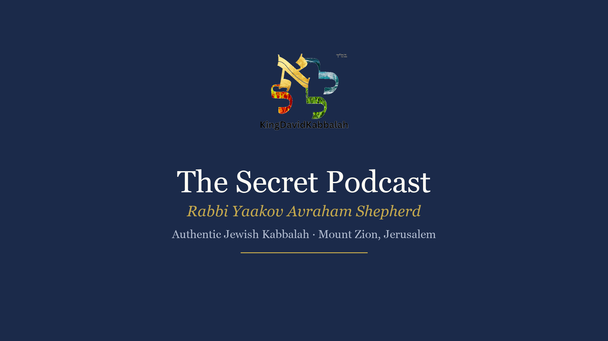
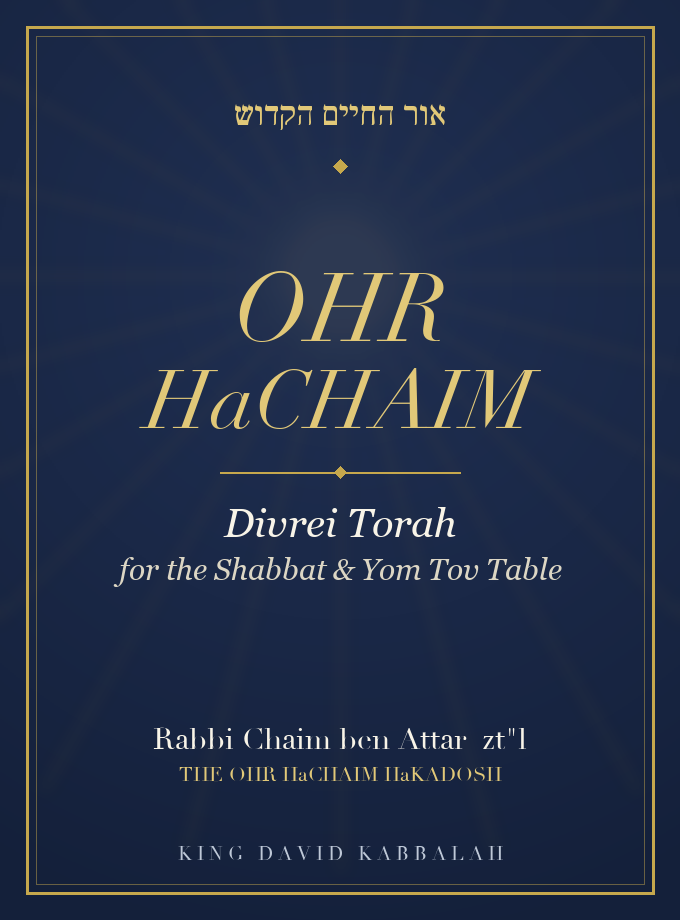

מערכת AI שלמה שמריצה את כל הפעילות הדיגיטלית של מוסד תורני — תוכן, קהילה, הפצה והכנסה — בניהול רב אחד.
לא רעיון. מערכת חיה שעובדת היום. עם דוגמאות אמיתיות מהשטח.
כל רב היום עומד מול אותו פער: התורה והאחריות להפיצה — אינסופיות; אבל השעות, הצוות והתקציב — לא. מוסד שרוצה לגדול צריך ניוזלטר, אתר, נוכחות ברשתות, דרך ללמד מעבר לכותלי בית המדרש — וכדי להחזיק מעמד, גם דרך לממן את העבודה. להעסיק צוות של כותבים, מעצבים, מפתחים, עורכי-אודיו ומשווקים — מעבר ליכולת של כמעט כל ישיבה.
בנינו תשובה אחרת. עוזר AI יחיד — בניהול הרב, מבוסס על תורתו ומקורותיו — שמריץ את כל המערך הדיגיטלי: כותב, מעצב, מפיק אודיו ווידאו, בונה אתרים ואפליקציות, מנהל מייל וקהילה, מוביל הפצה, ומדווח. כל מה שלמטה — אמיתי, ובהפקה כל יום.
7
תחומי-יכולת, מפעיל אחד
3
שפות — עברית · אנגלית · ספרדית
24/7
אוטונומי — עובד גם בשבת ובמנוחה
מה המערכת מייצרת — דוגמאות אמיתיות
⭐ הבסיס — מאגר ידע מכל השיעורים שלך
לכל רב יש אוצר עצום של שיעורים — שנים של הקלטות, כתבים ודרשות — מפוזרים בין יוטיוב, וואטסאפ, דיסקים ומחברות. אין לו את הזמן או הכוח לאסוף הכל למקום אחד. זה הצעד הראשון של המערכת: היא אוספת את כל השיעורים, מתמללת אותם, ובונה מהם מאגר ידע אחד, מחופש — בקולו ובמקורותיו של הרב בלבד.
מרגע שהמאגר קיים, הכל נשען עליו: הניוזלטר נכתב ממנו, האווטר עונה ממנו, המדיטציות נבנות ממנו, והתשובות לקהל מבוססות עליו — תמיד מתורת הרב עצמו, לעולם לא מומצא. אוצר התורה של הרב הופך לנכס חי שעובד בשבילו 24/7.
בשטח: מאגר ידע פעיל של למעלה מ-13,000 קטעי-מקור מתורת הרב + מקורות הרקנטי, ממנו נבנה כל תוכן שיוצא.
כרוזי תוכן וכרטיסים — בשלוש שפות
מנוע "card-engine" מפיק כרטיסי פרשה, ציטוטים, קרוסלות, באנרים, תמונות-נושא ליוטיוב והזמנות לערוצים — כל אחד בעברית, אנגלית וספרדית, עם החותם, QR ותמונת הרב. כל כרטיס עובר ביקורת-איכות ויזואלית אוטומטית לפני שהרב רואה אותו.

כרטיס פרשה — עברית

אותו תוכן — אנגליתאותו תוכן — ספרדית

כרטיס ציטוט

תמונת-נושא ליוטיוב

באנר לרשת
ניוזלטר שבועי — PDF מעוצב + מייל
ניוזלטר פרשה שבועי הבנוי על פירוש נבחר של הרב — חוברת PDF מעוצבת בת 6 עמודים + מייל ממותג — מבוסס אך ורק על מקורות אמיתיים (לעולם לא מומצא), נחקר דרך ספריית המקורות של הרב, נשלח לרשימה כולה כל שבוע דרך מערכת מייל בבעלות עצמית.

דוגמה חיה: "Recanati Kabbalistic Insights" — חוברת 6 עמודים (שער · 3 דברי-תורה ממוקרים · עמוד ברכה · עמוד CTA לתרומה וקהילה).
פתח דוגמת ניוזלטר (PDF) ↗
נשלח השבוע ל-1,276 נמענים דרך מערכת המייל שלנו.
עריכת וידאו — עם אווטר ובלי אווטר
הפקת וידאו מלאה: סרטוני תוכן מעוצבים ללא צילום, וגם אווטר AI מדבר בקול הרב (או קול משובט) בכל שפה — בלי מצלמה, בלי אולפן. אותו שיעור יכול לצאת באנגלית, עברית וספרדית מאותה הקלטה.
🧑🏫 וידאו עם אווטר AI של הרב
🎬 וידאו תוכן מעוצב — בלי אווטר
פודקאסט — הפקה וקליפים
הקלטה אחת → תמלול אוטומטי → חיתוך לקליפים → הפצה. כולל גרסת וידאו ממותגת לפודקאסט, ועטיפה.
🎙️ פיילוט פודקאסט וידאו
שרשרת הפקה: הקלטה → faster-whisper תמלול → בחירת קטעים → קליפים קצרים לרשתות → הפצה רב-ערוצית. הוכח על שיעור הרמח"ל (5 קליפים מ-2 שעות).
מדיטציות ואודיו מודרך
צינור אודיו מלא: תסריטים בכתיבה מקצועית, הקראה בקול נבחר/משובט, ואז מאסטרינג — הסרת רעש, ניקוי, איזון, ושכבת ניגון. מנוע אחד מייצר ספרייה שלמה על פני נושאים רבים ממקור תורה אחד.
דוגמה (30 שניות): מדיטציה מודרכת בהפקה.
ספרים ו-eBooks
עיצוב עטיפות, הפקת ספרים דיגיטליים, ניהול חנות Amazon/KDP — והפיכת תוכן קיים לספר לשולחן שבת.

עטיפת ספר "אור החיים — דברי תורה לשולחן שבת" (עיצוב מקורי), ו-eBook לדוגמה.
פתח דוגמת eBook (PDF) ↗
הפצה בערוצים שונים + תשתית קהילה
הפצה רב-ערוצית — ערוצי ובוטי טלגרם, רשתות חברתיות, ומערכת מייל בבעלות מלאה — מתואמת ממקום אחד, כולל שכבת תיאום-צוות רב-לשונית כדי שצוות מבוזר יישאר מסונכרן.
בשטח: שלושה ערוצי טלגרם (EN/ES/HE) + בוטים · רשימת מייל שעברה ממערכת של $90/חודש למערכת עצמית בעלות אפסית · תיאום צוות אוטומטי בשלוש שפות · נחיתת-דף, מוצרים נעולים, ומנוי בתשלום חי.
להשיג תורמים ותומכים — לפרויקט שלך
לכל רב יש פרויקט — ישיבה, ספר, בית כנסת, קהילה — שצריך כסף כדי להקים או להחזיק. הקושי האמיתי אינו רק לבקש, אלא לבנות את הקהל והאמון שמהם באים התורמים. המערכת בנויה בדיוק לזה: היא הופכת את התורה שלך למנוע שמגייס תמיכה.
איך זה מביא תורמים
קהל חם שגדל מעצמו — תוכן עקבי בכל ערוץ בונה רשימה וקהילה של אנשים שכבר מקבלים ערך ממך. תורם נותן למי שהוא מכיר וסומך עליו.
אוטוריטה שמושכת תמיכה — ניוזלטר מקצועי, אווטר, ספרים ומענה תורני 24/7 ממצבים אותך כרב עם מוסד רציני וחי — בדיוק מה שתורם רוצה לתמוך בו.
קריאה לתרומה בכל יצירה — כל דבר תורה, כל מייל, כל סרטון נושא בתוכו עמוד/כפתור תרומה מעוצב (כולל QR) — בלי לחץ, בטבעיות, פעם אחר פעם.
פנייה ממוקדת לתורמים גדולים — מחקר, איתור ופנייה אישית לתורמים פוטנציאליים, גושפנקאות (endorsements) ושותפים — מנוהל מתוך המערכת.
מנוי וקהילה חוזרת — לא רק תרומה חד-פעמית: חברוּת חודשית קבועה שמחזיקה את הפרויקט לאורך זמן.
בשטח: עמוד CTA לתרומה עם QR בתחתית כל ניוזלטר · מנוי חודשי חי עם חיוב חוזר · קמפיין פנייה לתורם/גושפנקא לספר "השדה והאינסוף".
מה עוד אפשר — האופק (כולל מה שעוד לא התחלנו)
מעבר למה שכבר רץ, אלו יכולות AI בשלות שאפשר להוסיף מיד — חלקן כבר נבדקו אצלנו (אווטר), חלקן מוכנות להפעלה:
דיבוב AI ל-175 שפות — אותו שיעור, באותו קול, בכל שפה. מוריד עלויות לוקליזציה ב-70%–90% ומקצר שבועות לימים. רב אחד מגיע לקהל אנגלי, ספרדי, צרפתי, פרסי ורוסי — בלי לצלם מחדש.
אווטר אינטראקטיבי "שאל את הרב" — אווטר חי באתר/וואטסאפ שעונה על שאלות תורה 24/7, מבוסס אך ורק על תורת הרב ומקורותיו.
שיבוט קול — קול הרב נשמר ומדבר בכל שפה ובכל תוכן חדש, באישורו בלבד.
ספרי-שמע (audiobooks) — הקראת ספרי הרב בקולו לקול נצחי.
קליפים אוטומטיים — חיתוך אוטומטי של שיעור ארוך לעשרות קליפים קצרים לרשתות.
מוזיקת AI — ניגונים ושכבות-רקע מקוריות למדיטציות ולסרטונים.
עוזר וואטסאפ — מענה אוטומטי, רישום לרשימה, וטיפוח קהילה ישירות בוואטסאפ.
תמונות AI — עטיפות, תמונות-נושא ותוכן חזותי לפי הצורך.
מקור מגמות הדיבוב והאווטרים: HeyGen ועוד (2026). סקירת כלים.
מה זה מחליף — והעלות
מוסד רגיל היה מעסיק (או שוכר) את כל אלה. המערכת עושה את עבודת כל אחד, בניהול הרב:
תפקיד שנשכר בדרך כלל
עלות חודשית טיפוסית
במערכת
כותב / עורך תוכן
$1,500–3,000
כלול
מעצב גרפי (רב-לשוני)
$1,500–3,000
כלול
עורך / מפיק אודיו ווידאו
$1,000–2,500
כלול
מפתח אתרים
$2,000–5,000
כלול
מנהל רשתות / קהילה
$1,500–3,000
כלול
מערכת מייל (כמו AWeber)
$90+
בבעלות עצמית, כמעט אפס
אסטרטג שיווק
$2,000–5,000
כלול
המספרים הם טווחי-שוק טיפוסיים לתפקידים שכירים, להמחשת ערך האיחוד. העלות התפעולית בפועל היא חלק קטן מהסכום — בעיקר עוזר ה-AI ושירותים זעירים לפי שימוש (הפקת קול, אחסון).
הוכחות — כבר בהפקה
1,276
מנויים שמקבלים את הניוזלטר השבועי
168
מאמרי תורה שהועברו לאתר חדש
3
שפות בהפקה מקבילה
חי
מוצר מנוי עם חיוב חוזר
$90→~$0
עלות מייל אחרי מעבר למערכת עצמית
24/7
הפקה נמשכת גם בשבת ובמנוחה
למה זה בטוח לרב
אפס בדיות, לעולם. דברי תורה מבוססים רק על מקורות אמיתיים ומצוטטים; עדויות ועובדות לעולם לא מומצאות. אנונימי-אך-אמיתי תמיד עדיף על שמי-אך-שקרי.
הרב מאשר לפני כל פרסום. שום דבר לא נשלח לקהל בלי אישור מפורש, פריט-פריט.
מדבר בקול הרב ובמקורותיו. המערכת מכוונת לפירושו, למינוחו ולגדריו ההלכתיים — ושומרת זיכרון של תיקוניו.
מודע-שבת. עבודה מול הצוות נעצרת בשבת; שום דבר לא נכנס לזמן הקדוש.